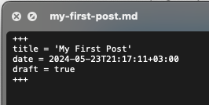

Introduction
In this article, I’ll write about how to create your personal website or landing page or any website which you want to show to internet with Hugo and Github Pages. And ofcourse with nocode.
No matter what field you work in, with a little bit of Git and Terminal knowladge, you can easily set up and deploy the site you want. If you’re ready, let’s start.
First of all, what is Hugo? Hugo is a static site generator. By editing the config files on top of template themes, you can create a site with your own configurations. So, in fact, you can create your personal website by editing a text file. You can use hundreds of different template themes. Among these themes, you can find hundreds of examples in different categories such as Portfolio, Personal Blog, and Landing Page.
So, What is Hugo? Hugo works fast and is lightweight. No matter how big your site is, it builds quickly and creates the website from your static content in a few seconds. For example, it takes around 5 seconds to build a site which has 60 blog posts and, each post containing 2-3 images. Additionally, as I mentioned earlier, there are many theme alternatives.Also, it is open-source. If you want, you can contribute as well. And I think most importantly, it explains the documentation in detail. And it has a Q&A site. If you have any problem, it can be quickly resolved since others might have faced the same issue before.
Enough introduction. Let’s start creating our site. What we need are a text editor (like Sublime), a Terminal, and a GitHub account.
Installation
Let’s start by installing Hugo on our computer. Since I have a Mac, I’ll continue with the Mac installation. If you have a different operating system, it’s worth checking out Hugo Install.
I’ll use Brew to install Hugo. Brew makes things easy here.
brew install hugo
After installing Hugo, you need to install Git on your device. I also install Git with Brew.
brew install git
That’s it for the setup. Now we can start creating our site.
Create Web Site
Let’s create a new terminal tab by going to the location where we want to store the files of our site.
hugo new site personal_website
cd personal_website
git init
Let’s create the basis of our site with these 3 commands. So what do these 3 commands do?
With the command in line 1, a site base is created using hugo’s own configurations. If we go to the files it created, we will see that it created folders such as content and static for us that we will use frequently in the future.\n The command on the 2nd line goes to the details of the created folder. \n The command on the 3rd line initializes git to the base folder of our website. \n
Now it’s time to integrate a theme we like. I’ll go to Hugo Themes and add a theme I like. As the theme, I choose PaperMod, one of the most popular themes.
git submodule add --depth=1 https://github.com/adityatelange/hugo-PaperMod.git themes/PaperMod
With the command above, we clone the PaperMod theme to our themes folder.
PaperMod uses a YAML configuration file. So we need a yaml file. We’ll create a config.yaml file with the following command. (It can vary from theme to theme. Some themes use TOML, while others use YAML. This information can be found on the theme’s installation page or sample sites.)
touch config.yaml
After adding the YAML file, I’ll copy the content of the sample YAML file provided by the theme into our local empty YAML file.
Now it’s time to see our site locally. We’ll use the hugo server command to bring up our site on localhost. This command will create a static website for us using the content, images, and themes we added, and deploy it on our localhost. When we run the command, we should see an output giving us our local address like this.
And ta-da! When we go to localhost, we should see a page like this.
This command works with the hotreload mechanism. So, as soon as you edit and save the yaml file, all your changes will be reflected automatically.
After this, you need to edit the content a little. For example, I change the Title and Content parameters under the HomeInfoParams in the yaml file. And it is instantly reflected and my site is updated as follows.
While you need to add images in the yaml file, for the parameters, you should go to the static folder in the folder where our site is located, add the images there and make it recognize the images by run hugo server again. You can then show the images by giving the parameter a path. For example; static/img/favicon.png.
Explanations of the parameters here are on PaperMod’s page. If you wish, you can edit the variables yourself by changing them.
Create Blog Post
We have organized our site in general terms. Now it’s time for the blog post part.
First of all, there is something we need to pay attention to here. Our theme needs to support the blog theme. In this way, we can display the blog posts which we write on our site. So, what can we do if it doesn’t support it? We can create our blog by creating a different site project and choosing a theme that supports blog posts. Then, we can then redirect from our personal site to our blog site. But, for now, let’s keep continue with a theme which supported blogs :).
While creating our article, you can create a markdown file in accordance with the structure by using the command below. All you have to do is open the relevant markdown file and edit it.
hugo new content posts/my-first-post.md
After running the command, the content of our sample markdown file looks like this.

Since our blog post is marked as draft, it might not appear on our site.
You can build that draft files by using the hugo server -D or hugo server --buildDrafts commands.
Markdown is a file and writing format which supports rich formatting. This article you’re reading is also created using markdown formats :) Everything except the images in this article was created using markdown formats. It supports all kinds of formats you can think of, such as mathematical formulas, codes, quotes, collapsible headings, lists, etc.
For more information and a cheat sheet about Markdown, you can check here. I recommend reviewing it.
Deployment
We’ve written our blog post. Now it’s time to deploy our site.
First, let’s update the baseURL parameter in our config file with the address we’ll use before building our site. For example, mine is https://scankiran.github.io. Your one is will be probably https://[username].github.io.
After defining our base URL, let’s build our site with Hugo. This time, since we’re going to send it to an address instead of localhost, we need to get the output of the build files. For this, we’ll use the hugo command. This command will produce a static site output for us from the posts we wrote and the config file we created and collect it under the public folder.
All we need to do next is upload this public folder to GitHub.
First, we need a public repository created with the name username+github.io on GitHub. For example, mine is scankiran.github.io.
After creating the repository, we can proceed in two different ways. We can either directly upload the public folder from the upload files section.
Or the other option is to push the public folder to this repository using classic git commands. My preference will be this way.
After pushing our files, let’s go to the pages section in the repository settings and set Deploy From Branch - Main.
After a few minutes, our site will be built and deployed by GitHub Actions. We can also check the processes from the Actions section.
At the same time, the result of the operation can be seen with a green tick next to our commit message on the main page.
In this article, we prepared our personal website from scratch together with Hugo and GitHub Pages. I hope it was helpful to you.
See you in the next articles.